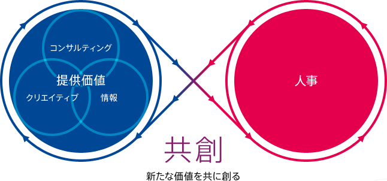

- 株式会社イーディアス ホーム
- > イーディアスについて


私たちは、日本全国の人事担当者が抱えるさまざまな課題に対して、
その解決の一助となる「最適な出会い」を創造します。
情報・人材・仕組みと出会うことによって、日本の企業が発展すること、
そして活力ある社会が実現することがイーディアスの願いです。
人事は「人材」に関するあらゆる業務を扱い、抱える課題の範囲も広く複雑です。
さらに、企業の規模や業種、将来のビジョンといった複数の要因でその課題は変化します。
企業独自の課題を解決するため、どんな知識が必要でしょうか。どのくらい時間をかけられるのでしょうか。
私たちが目指すのは「人事向け総合サービス会社」です。
数々の企業の採用課題を解決した実績と、フリーペーパーの制作で培った人脈と事例・情報によって、
人事の悩みや課題に対し最適な解を導き出します。
人事担当者へ、情報との最適な出会いを提供することが、私たちイーディアスの仕事です。
イーディアスの提供価値
イーディアスは人事の皆様との共創によって提供価値を高めていきます。
-

コンサルティング×
クリエイティブ×情報力人事が抱える課題に対して、総合的な解
決手段を提示することが私たちのサービ
スです。潜在的な真の課題を見つけ出
し、その解決策となる情報を最適な形で
お届けします。最適な解はコンサルティ
ングとクリエイティブ、そして情報力を
持って生み出されます。 -

人事業務の仕組化
企業によって人材の課題は異なるため、
人事が抱える課題の解決策も異なりま
す。その解決策が何かという気付きを与
え、真に必要な情報やサービスを提供
し、膨大な人事の業務を仕組化して効率
化すること。それが私たちイーディアス
の使命です。 -

知のオープン化と共創
企業へのコンサルティングや取材で獲得
した知識をサービスとして提供します。
課題解決により得た情報は、さらに他の
人事が活用できる知識として提供。この
人事とともにつくるサイクルこそが、イ
ーディアスが目指す知のオープン化と共
創です。

 人と人をつなぐ、人事のための総合メディア ＠人事
人と人をつなぐ、人事のための総合メディア ＠人事
「情報」と出会う ～人事が必要とする情報発信～
フリーペーパー＆Webサイト「＠人事」は、人事担当者が知りたい情報を知りた
いときに手に入れられるよう、具体的な施策やナレッジを集約させた、新しいメデ
ィアです。旬なニュースをはじめ、他社の成功事例や人事担当者のスキルアップ
術、魅力的な人事向けサービスといった有益な情報を人事担当者にお届けします。

-

＠人事
フリーペーパー人事担当者に役立つ情報を
集めたフリーペーパーで
す。企業の成功事例や人事
担当者の対談、著名人のコ
ラムなどを掲載していま
す。 -

＠人事
ポータルサイトフリーペーパーと同様に、
人事に役立つ情報を発信し
ます。配信記事だけでな
く、＠人事が主催するセミ
ナー受講や講師募集への応
募、サービスへの問い合わ
せが可能です。 -

人事向け
サービスガイド＠人事と提携する、人事向
けのサービスを提供する会
社を一覧で掲載していま
す。あらゆるサービスを網
羅し、選び方や利用方法も
ご相談いただけます。 -

セミナー
＆交流会＠人事では、年に4回セミ
ナーと交流会を開催してい
ます。実施セミナーは＠人
事ポータルサイトで動画配
信し、編集したDVDの販売
も行います。
 採用コンサルティング
採用コンサルティング
「仕組み」と出会う ～採用課題解決のための仕組みづくり～
人事の業務領域の中で大きな割合を占める「採用」に特化したサービスです。イーディアスの採用コンサルタントがクライアントのパ
ートナーとなり、年間単位で最適な採用活動をサポートするサービスです。
-

採用業務アウトソーシング
ホスピタリティと状況判断力をもって、
採用の判断を除くすべて、または一部の
業務を代行し、担当者が中核業務に集中
できるよう支援します。 -

情報提供力
イーディアスがこれまでのコンサルティ
ング経験や人事向け情報誌の制作で獲得
した、各社の状況と成功事例をご提供し
ます。 -

採用ツール制作
コンサルティングによる深い理解に基づ
いて採用ツールを制作するため、企業の
価値や魅力を正確に伝えられ、効率とク
オリティも両立できます。
-

組織化
イーディアスが多くの成功事例から得た
採用活動の「仕組み」を利用すること
で、経験や知識がなくとも運用できるよ
う支援します。 -

効率化と省力化
データやテンプレートの整理、アウトソ
ース活用などで業務の省力化・効率化を
図り、“採用担当者しかできないこと”に
集中できる環境をご用意します。 -

改善と施策実行
定期訪問によって企業の細かな変化を読
み取り、“想定外の出来事”があっても、
迅速かつ柔軟に次の策を講じます。
人事向けサービス総合代理店
「サービス」と出会う ～人事が必要とするサービスの紹介～
イーディアスが「＠人事」の制作を通じて出会った、「人事に役立つ」サービスを提供する会社との橋渡しを行います。人事と情報と
の出会いを創造すること。どのサービスを利用したらいいか、自分たちでやるべき範囲はどこか、などの相談に応じ、人事担当者の省
力化と効率化を支援します。